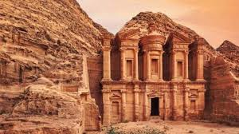

Scorix Verso is a water-powered desert hero from Aquara DUNE, a wasteland city once sustained by underground water. As the land became dry, cracked, and lifeless, he rose as a protector driven by empathy, resilience, and the hope of restoring life to his people.

His world is filled with scorching heat, abandoned structures, shifting sand, and fading memories of survival. Yet through hidden strength, flowing energy, and the power of water, Scorix fights for rebirth in the harshest environment.